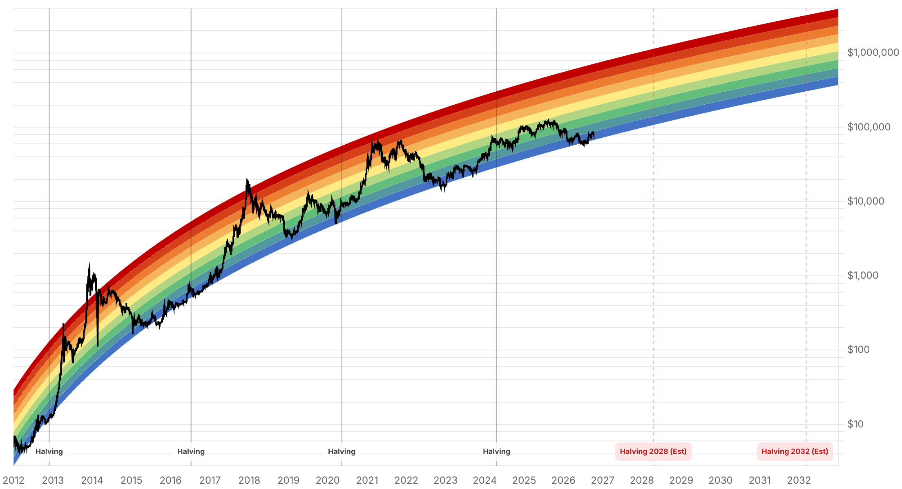

Reporte financiero
BTC cotiza en USD 82.997,08 en vivo (07:25 UTC), +0,10% frente al cierre de ayer (USD 82.911,77) -tercer día consecutivo de estabilización en la banda USD 82.000-83.000, sin un catalizador de precio nuevo hoy-. La novedad más relevante desde el reporte de ayer no es de precio sino de flujos: se confirmó que los ETF spot de BTC tuvieron una salida neta de USD 244,1M el 8 de octubre (IBIT -USD 5,5M, FBTC -USD 197,1M, cifras de Farside que ya no quedan como 'preliminares') y que el 9 de octubre los flujos volvieron a terreno positivo con una entrada neta de USD 21,1M (IBIT +USD 22,4M, FBTC -USD 3,6M) -la primera entrada neta tras varios días de salidas, aunque de magnitud pequeña y todavía sin un segundo día de confirmación (el dato del 10 de octubre no está disponible aún)-. En el plano regulatorio hay dos desarrollos: la Comisión de Valores de Tailandia finalizó el 8-9 de octubre las reglas para ETF locales de Bitcoin y Ether en la Bolsa de Tailandia (vigentes desde el 16 de octubre, con exposición mínima de 80% a un solo activo y custodios regulados, sin margin loans) -un canal institucional nuevo pero acotado, ya que cada fondo debe aprobarse individualmente antes de listar-; y el outlook sobre la Clarity Act se deteriora más: tras el fracaso de la moción de cloture en el Senado (49-50, 15 de septiembre, ya conocido antes del reporte de ayer pero no reportado explícitamente hasta ahora), un análisis de octubre del estudio Orrick señala que la aprobación en este Congreso 'se ve ahora como poco probable' por la mayoría de los observadores, y Polymarket asigna apenas ~30-32% de probabilidad a que se firme como ley antes del 31 de diciembre de 2026 -esto debilita directamente la pata alcista del escenario de QCP Capital de la semana pasada, que condicionaba el caso sobre USD 100.000 al avance de esa ley-. En el frente Tether/reguladores, el plazo del 9 de octubre que el senador Blumenthal había fijado a el Tesoro (Bessent) y al Departamento de Justicia (Blanche) para responder sobre los vínculos de USDT con Irán venció sin una respuesta pública confirmada, y el 8 de octubre Blumenthal envió un nuevo pedido de registros al CEO de Cantor Fitzgerald sobre sus vínculos con Tether, con respuesta esperada para el 23 de octubre -una escalada, aunque todavía sin impacto de precio visible-. No hay novedades sobre la tregua Trump-Irán (sigue como la reportó ayer, sin confirmación de ruptura ni de avance) ni sobre compras de Strategy/Saylor desde la del 5 de octubre. El Fear & Greed Index bajó levemente de 64 a 61, manteniéndose en zona 'Greed' pero sin la fuerza de ayer.
El dato preliminar de ~USD 244M de salida del 8 de octubre que quedaba sin confirmar en el reporte de ayer ya está verificado por Farside: salida neta de USD 244,1M (FBTC -USD 197,1M, IBIT -USD 5,5M, el resto repartido entre otros emisores). El 9 de octubre los flujos revirtieron a una entrada neta de USD 21,1M (IBIT +USD 22,4M, FBTC -USD 3,6M), la primera entrada positiva tras la racha de salidas reportada en ediciones anteriores. Es un solo día de magnitud modesta -no alcanza para hablar de un cambio de tendencia- y el dato del 10 de octubre todavía no está disponible en las fuentes consultadas (Farside, TFTC).
La Comisión de Valores de Tailandia (SEC) finalizó el 8-9 de octubre el marco regulatorio para ETF cripto listados en la Bolsa de Tailandia, limitado inicialmente a Bitcoin y Ether. Los fondos deben ser pasivos, mantener una exposición promedio de al menos 80% del NAV a un solo activo por año contable, usar custodios digitales regulados por la SEC y no pueden financiarse vía margin loans de los corredores. Los fondos mutuos y privados tailandeses ya pueden invertir en estos ETF locales (antes solo podían acceder a ETF extranjeros). La fecha del 16 de octubre es la de entrada en vigencia del marco, no una fecha de listado confirmada -cada fondo debe aprobarse individualmente antes de poder cotizar-, por lo que es un canal institucional nuevo pero todavía acotado en alcance y tamaño frente al mercado de ETF de EE.UU.
La moción de cloture sobre la Clarity Act ya había fracasado en el Senado por 49 a 50 votos el 15 de septiembre (antes del reporte de ayer, pero no se había detallado en ediciones previas) y desde entonces no hay una nueva votación programada. Un análisis de octubre del estudio legal Orrick señala que la aprobación de la ley durante este Congreso 'se ve ahora como poco probable', y Polymarket asigna actualmente ~30-32% de probabilidad a que se firme como ley antes del 31 de diciembre de 2026 (frente al 47% de hace unos meses y muy por debajo del 82% de febrero). Esto es relevante porque el outlook trimestral de QCP Capital (reportado ayer) condicionaba explícitamente su escenario alcista sobre USD 100.000 a que, entre otras cosas, 'avance la Clarity Act' -con este deterioro adicional, esa condición se ve menos probable de cumplirse en el corto plazo, sin que haya cambiado nada en el resto del escenario de QCP.
El plazo del 9 de octubre que el senador Blumenthal había fijado (en sus cartas del 28 de septiembre) al secretario del Tesoro Bessent y al fiscal general Blanche para responder sobre los vínculos de USDT con transacciones vinculadas a Irán venció sin que se confirmara una respuesta pública de ninguna de las dos agencias. El 8 de octubre, Blumenthal envió un pedido de registros separado al CEO de Cantor Fitzgerald (firma con vínculos accionarios con Tether) con respuesta esperada para el 23 de octubre. Es una escalada en el plano regulatorio/político, pero todavía sin traducirse en una acción concreta de DOJ o Tesoro ni en un impacto visible sobre el precio.
No se encontró ninguna novedad verificable sobre la tregua anunciada por Trump el 8 de octubre (sigue sin confirmarse ni ruptura ni avance formal) ni sobre la posición de Strategy, que mantiene su última compra confirmada del 5 de octubre. Se reportan solo para que quede explícito que se revisó, no porque haya algo nuevo que agregar.
| Periodo | Valor |
|---|---|
| 5 oct | 85786.59 |
| 6 oct | 85557.56 |
| 7 oct | 83275.93 |
| 8 oct | 81676.34 |
| 9 oct | 82546.32 |
| 10 oct | 82912.23 |
| 11 oct (en vivo) | 82997.08 |
| Periodo | Valor |
|---|---|
| Fear & Greed | 61 |

El precio sigue contenido en la banda USD 82.000-83.000, sin un catalizador nuevo hoy; los niveles técnicos de soporte (USD 80.300-82.000) y resistencia (USD 83.400-85.400) señalados en ediciones anteriores no tienen actualización nueva (no se encontraron datos frescos de liquidaciones de CoinGlass hoy) y se mantienen como referencia. El catalizador más próximo sigue siendo el IPC de septiembre el 14 de octubre, sin cambios en el consenso (~3,6-3,7% interanual) reportado ayer. La entrada neta de ETF del 9 de octubre (+USD 21,1M) es una señal tentativamente positiva, pero un solo día no permite hablar de reversión de tendencia -falta el dato del 10 de octubre para confirmar continuidad.
El deterioro adicional del outlook de la Clarity Act (cloture ya fracasado desde septiembre, análisis de octubre de Orrick, Polymarket en ~30-32% de probabilidad de aprobación en 2026) debilita la pata alcista del escenario de QCP Capital hacia USD 100.000 sin cambiar su rango base de USD 80.000-90.000 para el Q4. Tailandia suma un canal institucional nuevo (ETF locales desde el 16 de octubre) pero de alcance acotado frente al mercado de ETF de EE.UU. La escalada regulatoria sobre Tether (vencimiento sin respuesta del plazo a Tesoro/DOJ, nuevo pedido a Cantor Fitzgerald) es un riesgo de cola a monitorear, sin impacto de precio confirmado todavía.
Sin cambios en los objetivos de precio de largo plazo ya reportados en ediciones anteriores (Citigroup USD 113.000 -nota: otra cobertura cita un recorte previo de Citi a USD 82.000, cifra que coincide por casualidad con el precio spot actual-, Bernstein, Standard Chartered, Tom Lee, NYDIG, Armstrong) ni en el trasfondo regulatorio de fondo más allá de lo ya detallado arriba sobre la Clarity Act. No se encontró desarrollo nuevo y verificable en otros frentes (ICBA vs. OCC, sanciones a la red A7) hoy.
Tras varios días de salidas y una salida grande confirmada el 8 de octubre (-USD 244,1M), la entrada del 9 de octubre es la primera señal positiva, pero de magnitud pequeña y sin el dato del 10 de octubre todavía disponible para confirmar continuidad. Esperar al menos 2-3 sesiones adicionales antes de asumir un cambio de tendencia en los flujos.
Ese escenario depende explícitamente de que avance la Clarity Act, y el deterioro adicional reportado hoy (cloture fracasado, análisis de Orrick, Polymarket ~30-32%) hace ese avance menos probable en el horizonte del Q4. El rango base de QCP (USD 80.000-90.000) no cambia, solo su pata más alcista.
El vencimiento sin respuesta del plazo a Tesoro/DOJ y el nuevo pedido a Cantor Fitzgerald (respuesta esperada el 23 de octubre) son una escalada política, pero no hay todavía una acción concreta de la DOJ ni un impacto de precio confirmado. Es un riesgo de cola a vigilar de cara a esa fecha, no una señal operativa hoy.